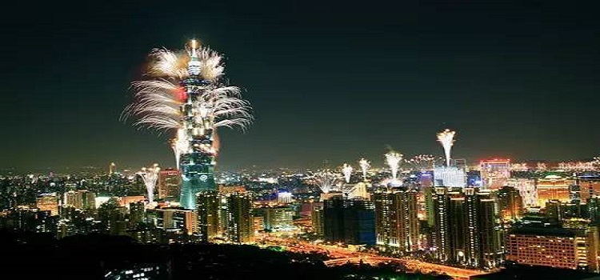

介绍
#地理位置与历史概况#
台北（Taipei），简称“北”，又称北市，是台湾省省会。位于台北盆地中央，以淡水河、新店溪、景美溪与新北市为界。全市下辖12个区，总面积271.8平方公里，2014年总人口270.15万人，居台湾省第四位，人口密度居台湾省第二位。

图：台北101跨年
台北旧城区只包含1990年台北市行政区重划前，城中区的范围。早期称呼的台北则是狭义的，只包括大安区、松山区、大同区、信义区、中正区、中山区与万华区在内的台北市旧市区。
然而，由于旧城区趋于没落，商业重心与市政核心东移，以及大量来自于台湾中南部的外来人口聚居于周围卫星市镇，今日所称台北，有时是指台北市12区，也有时泛指包含台北市与新北市、基隆市在内的整个大台北地区。
台北市历史悠久，历史遗迹众多，于旧石器时代晚期即有人类居住，1875年（清光绪元年）钦差大臣沈葆桢在此建立台北府，意为台湾之北从此有“台北”之名，统管台湾军民政务，从此逐渐成为台湾的政治中心。
台北市是台湾省的六个“直辖市”之一，也是台湾省的政治、经济、文化、旅游、工业、商业与传播中心，仅次于新北市的台湾第二大城市。
台北市是台湾北部的游览中心，除阳明山、北投风景区外，还有省内规模最大的木栅动物园。此外，由私人经营的荣星花园规模也相当可观。大安森林公园、台北植物园、北投地热谷公园、士林官邸公园等地，也都是游览的好地方。
台北市名胜古迹颇多，其中北门城门、龙山寺、保安宫、孔庙、指南宫、圆山文化遗址等处，均为风景优美，适宜游览的好地方。
#宗教#
道教于17世纪传入台湾，在日据时期，受到日本殖民政府去中国化的影响，信徒只好在佛教寺庙中奉祀道教的神。台湾光复后，由于宗教观念宽大，佛教、道教合流，在一个神殿中，可同时供奉不同的神，而形成了台湾本土的特色。
另外，值得一提的有儒家的孔子。孔子是中国最伟大的老师，他提倡礼仪、祭拜祖宗，所以西汉元帝替孔子设祠后，就接着有许多孔庙的建立，都是用来表达对孔子的敬仰。在外来宗教方面，17世纪初叶，天主教和基督教随着西班牙、荷兰势力，先后进入台湾传教。
近来各方宗教蓬勃发展，除了天主教、基督教外，还有回教、大同教等，也都在台北拥有一片空间。
图：台北劍潭古寺
#最佳出游时间#
3-5月、10-11月是台北的最佳旅游时间。这时候是台北的春秋季，此时台北气候温和舒适，天气适宜出行。3-5月为梅雨季，出游时要记得带好雨具。每年10-11月，台北有百年历史的温泉节也会如期而至。而5月底-9月为台北的夏季，天气炎热潮湿，同时也是台风季，行前需要查好天气，以免遇到台风天耽误行程

图：台北街景
时差
台北为东八区区时，与北京没有时差。
公众假期及节庆
#元旦#
元旦是公历新一年的第一天。台北有最HIGH新年城活动（英语：Taipei New Year’s Eve Countdown Party），是台湾台北市信义商圈的一系列跨年活动的总称，以每年12月31日下午7时至元旦上午1时于市府广场前的跨年晚会为主轴，再结合台北101的烟火秀迎接新的一年，是台北市政府自2003年跨2004年起所沿用至现在的跨年活动名称。
图：台北101烟火
#春节#
春节气氛以农历正月初一到初五这段期间最为浓厚，民间俗称「过年」，含有辞旧迎新之意，被视为一年中最重要的节日。从春节前夕到农历大年初五之间，台北民间遵行多项习俗。
#和平纪念日#
为了纪念1947年的“二二八”暴动事件，台湾各地机关在这一天降半旗，以示哀悼，市民们放假一天。
图：台北228和平公园
#清明节（民族扫墓节）#
清明是祭拜逝去亲人的日子。在台北，清明是仅次于春节的最繁忙节日，当地人返乡到先人墓前祭扫、挂纸，并献上米糕，表达对逝去亲人的怀念与哀思。清明还是“民族扫墓节”。清明前后，台湾很多机构都要举行仪式，遥祭黄帝。
图：清明节习俗
#端午节#
端午节与春节、中秋节并称三大节日，因其由来和习俗，几乎都和纪念战国时期楚国诗人-屈原有关，故民间又称「诗人节」。在端午节期间，台北各地每年均有大型龙舟竞赛，近年还扩大举办国际邀请赛，邀请国外朋友共襄盛举。此外，还有包粽子、在门上悬挂艾草、菖蒲、榕枝等，藉以驱避蚊虫，悬挂钟馗画像、佩带香包及饮雄黄酒等以保平安的习俗。
图：端午节划龙舟
#中秋节#
中秋节又称「月节」，在台北所有节庆中，它是最富浪漫气息的节日。一般人常以「花好月圆人团圆」来点出中秋节的内涵。由于中秋节的活动大都与月亮有关，因此自古以来被视为拜月亮的节日，主要活动包含拜月、祭土地、走月亮、吃月饼等，都是从月亮衍生而来的习俗。
图：台北101夜景
#双十节#
“双十节”，是辛亥革命纪念日，又称：“双十庆典”等，是纪念公元1911年10月10日（即：清宣统三年、辛亥年农历八月十九）发动武昌起义的庆典。
图：双十节庆典
除了每年必至的传统节日，台北更有各类型的时令活动，如音乐节、美食节、艺术节等多姿多彩的丰富项目，如欲获得更多信息，可参考台北旅游网等网站。
网址：https://www.travel.taipei/
有关台湾公众假期更多的资讯，可以浏览以下网页。
网址：http://holidays-calendar.net/